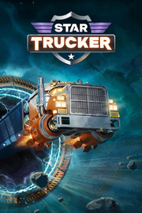

Star Trucker
Detalles
|  | |
| Tiempo de juego | No Jugado |
| Última actividad | Nunca |
| Añadido | 11/13/2024 0:35:38 |
| Modificado | 11/13/2024 1:05:54 |
| Estado de finalización | No Jugado |
| Librería | Playnite |
| Fuente | PORCHE |
| Plataforma | PC (Windows) |
| Fecha de lanzamiento | 9/3/2024 |
| Puntuación de la Comunidad | 75 |
| Puntuación de la Crítica | |
| Puntuación de usuario | |
| Género | Simuladores |
| Desarrollador | Monster and Monster |
| Editor | Raw Fury |
| Característica | Compat. Total Con Mando Cromos De Logros De Préstamo Familiar Un Jugador |
| Enlaces | Punto de encuentro Discusiones Guías Noticias Página de la tienda PCGamingWiki Logros |
| Tag | Ambientales América Aventura Ciencia ficción Conducción Espacio Exploración Física Futuristas Modificables Mundo abierto Primera persona Relajantes Sandbox Simulación Simulador de automóviles Simulador espacial Simulador inmersivo Supervivencia Transportes |
Descripción

Sube de un salto al asiento del conductor de tu camión propulsado por cohetes, transporta mercancías, busca material recuperable y conoce a un elenco de camioneros espaciales de lo más variopinto en este viaje al más puro estilo americano por la carretera más larga de todas: ¡el espacio!

Viaja por las hiperautopistas y acepta trabajos de todo tipo, desde viajes de larga distancia en los que no podrás quitar ojo al indicador de gasolina hasta transporte de mercancías peligrosas. Así podrás ganar dinero que te permita desbloquear contenido nuevo.
Y no te olvides de estar pendiente de la emisora para ver qué dicen los demás camioneros. Es una forma estupenda de descubrir trabajos secundarios y estar al día de lo que se cuece en la galaxia.


Mantener el camión en marcha no siempre es fácil. Tendrás que procurar que tus sistemas básicos estén en buen estado, que el compensador de gravedad no falle y que no haya roturas en el casco para evitar que tu camión pierda combustible para pulmones.
No dejes de pasar por las tiendas para buscar los recambios adecuados antes de empezar un viaje largo y plantéate si te conviene mejorar el camión en el taller más cercano. Esas mejoras serán fundamentales para cruzar sectores complicados de forma segura y hacer las entregas a tiempo.

Usa el mapa galáctico para planear tu viaje y ver por cuántas puertas de salto tendrás que pasar, pero sin perder de vista tu nivel de combustible y batería.
Una vez que hayas fijado el itinerario, relájate, enciende la radio del camión y déjate mecer por una selección de temas originales que incluyen blues potente como una supernova, rocanrol galáctico y música tradicional estadounidense de la era espacial. ¡La carretera te aguarda!

Star Trucker el proyecto soñado de un equipo pequeño: Monster and Monster, un estudio independiente de dos personas, amantes de los simuladores y la ficción científica.
Con la ayuda de unos cuantos amigos rebosantes de talento, han desarrollado una experiencia que no es de este mundo, llena de desafíos inesperados y sistemas complejos a los que enfrentarte. Así que ¡abróchate el cinturón y prepárate para un largo viaje junto a ellos!